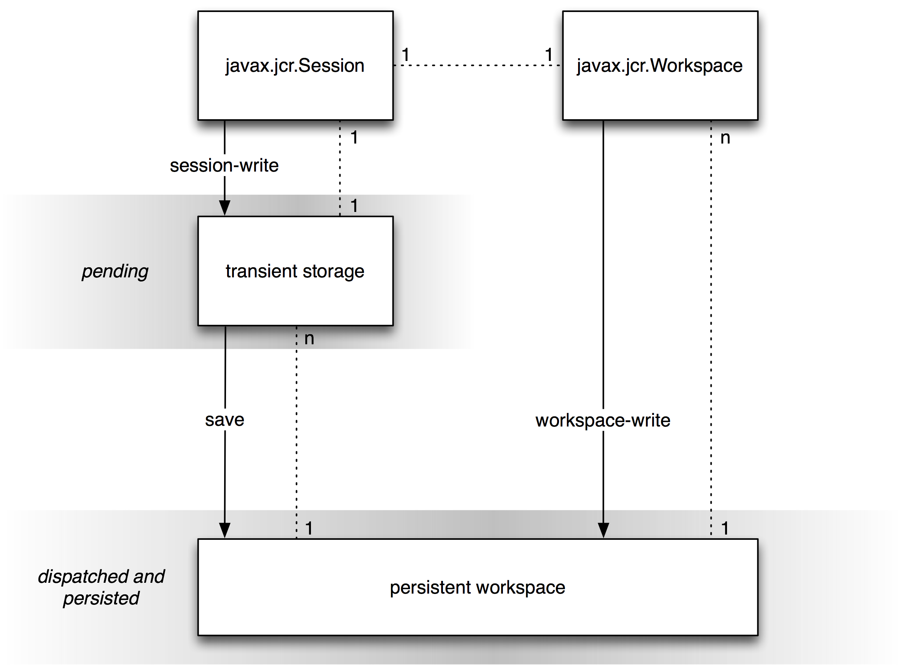
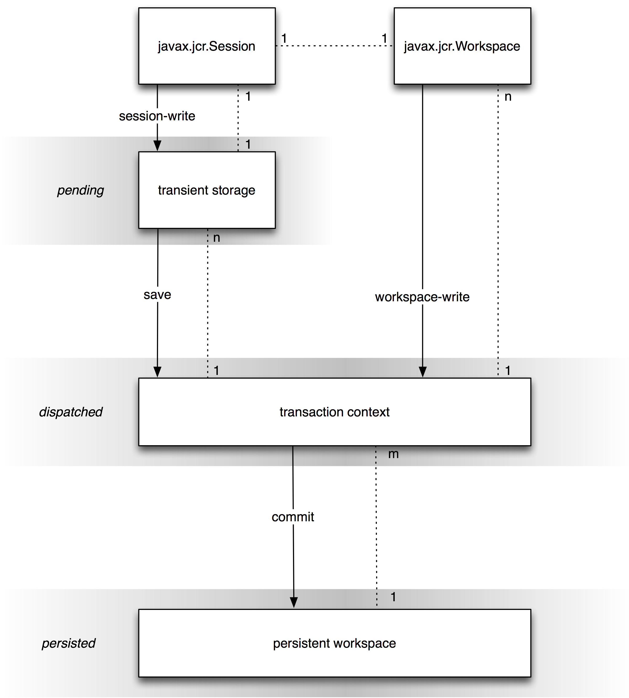

A repository may be writable.
Whether an implementation supports writing can be determined by querying the repository descriptor table with
Repository.WRITE_SUPPORTED.
A return value of true indicates support (see §24.2 Repository Descriptors).
A JCR write method is either a session-write or a workspace-write.
Changes made through a session-write are buffered in a transient store associated with that method's current session (see §3.1.8.2 Current Session and Workspace). The transient store permits a series of changes to be made without validation at every step, thus allowing item structures to be temporarily invalid while they are being constructed. Once completed, the change set can be saved.
Before save, a change in transient store is pending.
Upon save, all changes in transient store are dispatched.
A change made through a workspace-write is immediately dispatched.
In the absence of a transaction, every dispatched change is immediately persisted.
Within a transaction, dispatched changes are persisted upon commit.
(see §21 Transactions).
A change that is pending or dispatched (but not persisted) is visible only to the session through which that change was made. A change that is persisted is visible to all other sessions bound to the same persistent workspace that have sufficient read permission.
The write API is divided into the two types as follows.
The session-write methods are
Node.addNode, setProperty and orderBefore.
Property.setValue.
Item.remove.
Node.removeShare, and removeSharedSet.
Session.move, removeItem and importXML.
Query.storeAsNode.
Node.setPrimaryType, addMixin and removeMixin.
RetentionManager.addHold, removeHold, setRetentionPolicy and removeRetentionPolicy.
AccessControlManager.setPolicy and removePolicy.
The workspace-write methods are:
Workspace.move, copy, clone, restore and importXML.
VersionManager.checkin, checkout, checkpoint, restore, restoreByLabel, merge, cancelMerge, doneMerge, createActivity , removeActivity and createConfiguration.
Node.update and followLifecycleTransition.
LockManager.lock and unlock.
VersionHistory.addVersionLabel, removeVersionLabel and removeVersion.
Session.save.
Methods of org.xml.sax.ContentHandler acquired through Workspace.getContentHandler.
Workspace.createWorkspace and deleteWorkspace (these create or delete another workspace, though they do not affect this workspace).
Some repositories may choose to expose internal state data as virtual content within a workspace. For example, the set of registered node types may be so exposed.
In such cases, methods which directly affect the exposed internal state and, as a side effect, change virtual content must do so in a workspace-write manner. For example, NodeTypeManager.registerNodeType and unregisterNodeType should immediately dispatch changes to the in-content node type representation.
The core write methods of JCR are those write methods of the API whose write effect is not incidental to the support of another feature, such as versioning, import, locking, and so forth. Both session-write and workspace-write methods are among the core write methods. The core write methods are:
Node.addNode, setProperty and orderBefore.
Property.setValue.
Item.remove.
Node.removeShare, and removeSharedSet.
Session.move, and removeItem.
Workspace.move, copy, clone.
Session.save.
Given the set S0..Sn of Session objects bound to a persistent workspace WP, for each Si, there exists a distinct Workspace object Wi, bound one-to-one to Si, that represents the view of WP through the access permissions of Si.
Despite their one-to-one correspondence, Session and Workspace are defined as separate objects in order to differentiate the behavior of session-write methods from the behavior of workspace-write methods.
The following diagram depicts the behavior of write methods without a transaction.

The following diagrams depicts the behavior of write methods within a transaction.

This section covers the JCR API methods for adding new nodes and properties and changing the values of existing properties.
The methods
Node Node.addNode(String relPath, String primaryNodeTypeName)
and
Node Node.addNode(String relPath)
add a node at the specified location relative to this Node. The former specifies the intended primary node type of the node, while the latter assumes that the repository can determine the intended type from the node type of the parent.
Node.addNode is a session-write method and therefore requires a Session.save to dispatch the change (see §10.11 Saving).
The generic method for setting a property is
Property Node.setProperty(String name, Value value, int type).
This method sets the property of this Node with the specified name to the specified value and the specified type, converting the given value to that type if necessary. If the property already exists its value is changed. If it does not exist, it is added.
Node.setProperty is a session-write method and therefore requires a Session.save to dispatch the change (see §10.11 Saving).
An existing property can also be changed with
void Property.setValue(Value value).
Property.setValue is a session-write method and therefore requires a Session.save to dispatch the change (see §10.11 Saving).
Signatures of Node.setProperty and Property.setValue are also provided in which the intended JCR type is implied by the Java type passed in. For example,
Node.setProperty(String name, Calendar value)
sets a JCR DATE property called name to the specified value. See the Javadoc for the full set of signatures.
When setting a property of type DECIMAL using
Node.setProperty(String name, BigDecimal value) or
Property.setValue(BigDecimal value)
the java.math.BigDecimal object passed must be an instance of the actual class BigDecimal, not an instance of a subclass.
Every property must have a value. The range of property states does not include having a “null value”, or “no value”. Setting a property to “null” is equivalent to removing that property (see §10.9 Removing Nodes and Properties).
As with single-value properties, there is no such thing as a null value. If a value within a multi-value property is set to null, this is equivalent to removing that value from the value array. In such a case the array is automatically compacted, shifting the indices of those values with an index greater than that of the removed value by -1. However, while no value within a multi-value property can be null, a multi-value property can exist with no values (i.e., it can be an empty array).
Multi-value and single-value properties are set using different signatures of Node.setProperty and Property.setValue. Multi-value properties must be set using the signatures that take either a Value[] or String[]. Single-value properties must be set using the signatures that take non-array value arguments. An attempt to set a multi-value property with a non-array value argument, or a single-value property with an array value argument, will throw a ValueFormatException.
In many cases a property must be set using a Value object. Value objects are created using a ValueFactory, acquired through
ValueFactory Session.getValueFactory().
The generic Value creation method is
Value ValueFactory.createValue(String value, int type)
which takes the string-form of the specified type and returns a Value of that type using standard property type conversion (see §3.6.4 Property Type Conversion).
ValueFactory also provides methods for creating values of each property type from the corresponding Java type. See the Javadoc for the full set of signatures.
To create a BINARY value a javax.jcr.Binary object is first created from a stream using
Binary ValueFactory.createBinary(InputStream stream)
and then passed to
Value ValueFactory.createValue(Binary value).
An addNode or setProperty method must determine which, if any, item definitions of the parent node apply to the new child item, based on the name of the new item and, if provided, its type.
If more than one item definition still applies even after taking the name and type constraints into consideration, the repository may either fail the add attempt or automatically select one of the item definitions based on implementation-specific criteria.
For example, if the parent node P has two residual child node definitions that differ only by their OPV value (see §3.7.2.5 On-Parent-Version), then even if both a name and a primary type are supplied in the call to addNode this will not be sufficient information to unambiguously determine which residual definition the new node should fall under. In such a case, an implementation might automatically select one of the definitions based on the implementation-specific rule that a node with the name X will always have an OPV of V while other nodes will have an OPV of W.
When Node.setProperty is used to change the value of an existing property, cases where the intended property is ambiguous are handled in the same way as when the method is used to create a new property.
The method
void Session.move(String srcAbsPath, String destAbsPath)
moves the subgraph at srcAbsPath to a new location at destAbsPath. This is a session-write operation (see §10.1.1 Session-Write). The method
void Workspace.move(String srcAbsPath, String destAbsPath)
does the same, but is a workspace-write operation (see §10.1.1 Workspace-Write).
A referenceable node is guaranteed to maintain the same identifier across a move operation.
Non-referenceable nodes, on the other hand, may be tied either partially or entirely (as in the case where the identifier equals the path) to their position in the hierarchy and therefore may change identifier upon move.
Though nothing prevents an implementation from making non-referenceable node identifiers as stable as referenceable node identifiers, a user cannot rely upon this across repository vendors. For an overview of how identifiers behave with different methods see §25.1 Treatment of Identifiers.
Nodes can be copied from one path location to another within a workspace and, in repositories with more than one workspace, across workspaces (see §3.10 Multiple Workspaces and Corresponding Nodes). A copy operation on a node copies the node and its subgraph. Properties cannot be copied individually.
The method
void Workspace.copy(String srcAbsPath, String destAbsPath)
copies the node at srcAbsPath and its subgraph to a new location at destAbsPath. This is a workspace-write operation (see §10.1.1 Workspace-Write).
In a repository with more than one workspace, the method
void
Workspace.copy(String srcWorkspace,
String
srcAbsPath,
String destAbsPath)
copies the node at srcAbsPath in srcWorkspace and its subgraph to a new location at destAbsPath in the current workspace. This is a workspace-write operation (see §10.1.2 Workspace-Write).
When a node N is copied to a path location where no node currently exists, a new node N' is created at that location. The subgraph rooted at and including N' (call it S') is created and is identical to the subgraph rooted at and including N (call it S) with the following exceptions:
If the copy is within the same workspace, every node in S' is given a new and distinct identifier. If the copy is to another workspace, every referenceable node in S' is given a new and distinct identifier while every non-referenceable node in S' may be given a new and distinct identifier (see §3.8 Referenceable Nodes).
The repository may automatically drop any mixin node type T present on any node M in S. Dropping a mixin node type in this context means that while M remains unchanged, its copy M' will lack the mixin T and any child nodes and properties defined by T that are present on M. For example, a node M that is mix:versionable may be copied such that the resulting node M' will be a copy of N except that M' will not be mix:versionable and will not have any of the properties defined by mix:versionable. In order for a mixin node type to be dropped it must be listed by name in the jcr:mixinTypes property of M. The resulting jcr:mixinTypes property of M' will reflect any change.
If a node M in S is referenceable and its mix:referenceable mixin is not dropped on copy, then the resulting jcr:uuid property of M' will reflect the new identifier assigned to M'.
Each REFERENCE or WEAKEREFERENCE property R in S is copied to its new location R' in S'. If R references a node M within S then the value of R' will be the identifier of M', the new copy of M, thus preserving the reference within the subgraph (see §3.8 Referenceable Nodes).
When a node N is copied to a location where a node N' already exists the repository may either immediately throw an ItemExistsException or attempt to update the node N' by selectively replacing part of its subgraph with a copy of the relevant part of the subgraph of N. If the node types of N and N' are compatible, the implementation supports update-on-copy for these node types and no other errors occur, then the copy will succeed. Otherwise an ItemExistsException is thrown.
Which node types can be updated on copy and the details of any such updates are implementation-dependent. For example, some implementations may support update-on-copy for mix:versionable nodes. In such a case the versioning-related properties of the target node would remain unchanged (jcr:uuid, jcr:versionHistory, etc.) while the substantive content part of the subgraph would be replaced with that of the source node.
A node can be cloned to another workspaces to create a new corresponding node (see §3.10 Corresponding Nodes)
Corresponding nodes can be created by cloning a node from one workspace to another using:
void
Workspace.clone(String srcWorkspace,
String
srcAbsPath,
String destAbsPath,
boolean removeExisting)
This method clones the subgraph at srcAbsPath in srcWorkspace to destAbsPath in this workspace. The clone method clones both referenceable and non-referenceable nodes and preserves the identifier of every node in the source subgraph.
If there already exists anywhere in this workspace a node with the same identifier as an incoming node from srcWorkspace, and removeExisting is false, then clone will throw an ItemExistsException.
If removeExisting is true then the existing node is removed from its current location and the cloned node with the same identifier from srcWorkspace is copied to this workspace as part of the copied subgraph (that is, not into the former location of the old node). The subgraph of the cloned node will reflect the state of the clone in srcWorkspace, in other words the existing node will be moved and changed. If the existing node cannot be moved and changed because of node type constraints, access control constraints or because its parent is checked-in (or its parent is non-versionable but its nearest versionable ancestor is checked-in), then the appropriate exception is thrown (ConstraintViolationException, AccessControlException or VersionException, respectively).
In the case of shareable nodes, it is possible to clone a node into its own workspace (see §14.1 Creation of Shared Nodes).
Finding the path of a node's corresponding node in another workspace is done with
String Node.getCorrespondingNodePath(String workspaceName).
This method returns the absolute path of the node in the specified workspace that corresponds to this node.
Node correspondence governs the behavior of the update method:
void Node.update(String srcWorkspace)
causes this node to be updated to reflect the state of its corresponding node in srcWorkspace.
If this node does have a corresponding node in the workspace srcWorkspace, then this replaces this node and its subgraph with a clone of the corresponding node and its subgraph.
If this node does not have a corresponding node in srcWorkspace, then the method has no effect.
If the update succeeds, the changes made to this node and its subgraph are applied to the workspace immediately, there is no need to call save.
The update method does not respect the checked-in status of nodes. An update may change a node even if it is currently checked-in.
Node.update works for both versionable and non-versionable nodes (see §3.13 Versioning Model)
Removing a node or property can be done with
void Item.remove()
On the item to be removed itself, or
void Session.removeItem(String absPath)
Where absPath specifies the item to be removed.
These methods are session-write and therefore require a Session.save to dispatch the change.
A property can also be removed by setting its value to null. When this is done, the null parameter must be cast to a non-array type for single-value properties and an array type for multi-value properties.
Note that setting a multi-value property to an array containing null values is different from setting it to a null cast to an array type. In the former case, all null values within the array are removed and the array is compacted to include only non-null values even if this results in a multi-value property being set to an empty array. In the latter case the entire property is removed. For example,
p.setValue((String[])null)
would remove property p, whereas
p.setValue(new String[]{“a”, null, “b”})
would set p to [“a”,”b”] and
p.setValue(new String[]{null})
would set p to the empty array, [] (see §10.4.2.4 No Null Values).
To remove a node that is the target of a REFERENCE property, one must first remove that REFERENCE property (with the exception of REFERENCE properties within the frozen node of a version, see §3.13.4.6 References in a Frozen Node).
The check for referential integrity is done on persist of the removal. If the subgraph to be removed contains a node that is the target of a REFERENCE property outside that subgraph, a ReferentialIntegrityException is thrown.
Most writable repository implementations will support assignment of primary and mixin node types on node creation. Some implementations may also support assignment of new primary or mixin node types to existing nodes.
On Node.addNode the primary node type of the new node is assigned. In cases where a Node.addNode does not explicitly specify a primary node type, it is determined by the applicable child node definition (see §3.7.7 Applicable Item Definition). Otherwise, it is determined by the node type name passed. The jcr:primaryType property is created immediately and set to the name of the primary node type. This property is defined as mandatory in the node type nt:base (see §3.7.10 Base Primary Node Type) and will therefore appear on every node.
The constraints enforced by the assigned node type may take effect immediately, or on persist. Whichever is chosen, this node type assignment behavior must be consistent across all methods that assign node types (Node.setPrimaryType, Node.addMixin and Node.removeMixin, see §10.10.2 Updating a Node's Primary Type and §10.10.3 Assigning Mixin Node Types).
If immediate effect is implemented then conflicts with other mixins or with the primary type are detected immediately and an exception thrown. If on-persist effect is implemented, such conflicts are detected and the appropriate exception thrown on persist. This validation can also be performed pre-emptively with
boolean Node.canAddMixin(String mixinName).
A repository may permit the primary type of a node to be changed during its lifetime. Repositories are free to limit the scope of permitted changes both in terms of which nodes may be changed and which changes are allowed.
The method for changing the primary type of a particular node is
void Node.setPrimaryType(String nodeTypeName).
This method changes the primary node type of the node to nodeTypeName, and immediately changes the jcr:primaryType property of the node appropriately.
Semantically, the new node type takes effect in accordance with the node type assignment behavior of the repository (see §10.10.1 Node Type Assignment Behavior).
In addition to its single primary node type, a node may have one or more mixin node types assigned to it (see §3.7.5 Mixin Node Types). Assignment of mixin types is done through
void Node.addMixin(String mixinName).
A repository that supports the assignment of mixin types may permit mixin addition only before the first save of a node (in effect, only on node creation) or it may permit mixin addition and removal during the lifetime of a node. Removal of mixin node types is done with
void Node.removeMixin(String mixinName).
When a new mixin type is assigned using Node.addMixin, the name of the mixin is added immediately to the multi-valued jcr:mixinTypes property. If the property does not exist, it is created. This property is defined as non-mandatory in the node type nt:base and therefore may appear on any node. When a mixin is removed with Node.removeMixin the name of the mixin type is immediately removed from the property.
Semantically, any changes to mixin node types take effect in accordance with the node type assignment behavior of the repository (see §10.10.1 Node Type Assignment Behavior).
A NodeType object can be queried to pre-emptively determine whether a particular child item's addition or removal is allowed by that node type. The methods are:
boolean
NodeType.canSetProperty(String propertyName,
Value value)
boolean
NodeType.canSetProperty(String propertyName,
Value[] values)
boolean NodeType.canAddChildNode(String childNodeName)
boolean
NodeType.canAddChildNode(String childNodeName,
String nodeTypeName)
boolean NodeType.canRemoveNode(String nodeName)
boolean NodeType.canRemoveProperty(String propertyName)
A repository may automatically assign a mixin type to a node upon creation. For example if, as a matter of configuration, all nt:file nodes in a repository are to be versionable, then the repository may automatically assign the mixin type mix:versionable to each such node as it is created.
Similarly, a repository may automatically strip incoming imported nodes of any mixin node types that the repository does not support (see §11.3 Respecting Property Semantics).
Note that this behavior is distinct from that of adding a mixin type as a supertype of some primary types in the node type inheritance hierarchy (see §3.7.16.1.2 Additions to the Hierarchy). Though the two features may both be employed in the same repository, they differ in that one affects the actual hierarchy of the supported node types, while the other works on a node-by-node basis.
When a change is made to an item through a session-write method bound to a session S, that change is immediately visible through all subsequent read method calls through S. When
void Session.save()
is performed on S, all pending changes recorded in S are dispatched. Without transactions this causes the changes to be persisted. Within a transaction the changes must first be committed in order to be persisted. When a change is persisted it becomes visible to other sessions bound to the same persistent workspace.
From the point of view of a session S, the apparent state of an Item bound to S does not change upon a save of S (apart from the values returned by isNew or isModified, see §10.11.3 Item Status) since that state will have been visible to S since the session-write method call that caused it.
If one or more of the pending changes cause an exception to be thrown on save, then no pending changes are dispatched and the set of pending changes recorded on the session is left unaffected.
The method
void Session.refresh(boolean keepChanges)
refreshes the state of the transient session store.
If keepChanges is false, all pending changes in the session are discarded and all items bound to that session revert to their current dispatched state. Without transactions, this is the current persisted state. Within a transaction, this state will reflect persistent storage as modified by changes that have been saved but not yet committed.
If keepChanges is true then pending changes are not discarded but items that do not have changes pending have their state refreshed to reflect the current persisted state, thus revealing changes made by other sessions.
If an exception occurs on refresh, the set of all pending changes recorded on the session is left unaffected and the state of all bound Items is also unaffected.
The method
boolean Session.hasPendingChanges()
is used to determine if a session holds pending changes.
Whether an Item has pending changes can be determined with
boolean Item.isModified().
Whether an Item constitutes part of the pending changes of its parent can be determined with
boolean Item.isNew().
When a change to an item is persisted, the item in the persistent workspace to which that pending change is written is determined as follows:
If the changed Item is a Node with identifier I, then the changes are written to the persistent node with identifier I.
If the changed Item is a Property named P of a Node with identifier I, then the change is written to the persistent property P of the persistent node with identifier I.
These principles apply to both referenceable and non-referenceable nodes (see §3.8 Referenceable Nodes). For an overview of how identifiers behave with different methods see §25.1 Treatment of Identifiers.
For session-write methods, implementers have flexibility in deciding whether a particular validation is to be performed immediately on invocation of the write method or later on persist. For example, in the case Node.addNode, an implementer might immediately check that the path given is valid while postponing validation of node type constraints until persist-time.
It is suggested that an implementation perform each validation as soon as possible, given the underlying design of the repository.
It is required that an implementation prohibit the emergence of a persistent state in violation of the validation rules defined by this specification.
If an item has been modified in the Session but not yet persisted, and its corresponding item in the persistent workspace is altered through a workspace-write method, this has no effect on the transient state of the Session. The altered item in the Session remains and may be persisted later. However, the change made to the workspace may render the attempt to persist the session-change invalid (for example, if the workspace-change removed the parent of the session-change item). Note that this is precisely the same situation as would arise if a change were made to a workspace through another Session. In both cases the persist of the change may throw an InvalidItemStateException.
When changes are made to an Item object, those changes are recorded in its bound Session and immediately reflected in the Item object itself. A subsequent re-retrieval of the same item entity through a method bound to the same Session, will return an Item object reflecting the recent change. Note that this includes acquisition of nodes and properties through standard getter methods such as getNode and also retrieval through other means, such as a query (see §6 Query).
Whether the second Item object is the same actual Java object instance as the first is an implementation issue. However, the state reflected by the object must at all times be consistent with any other Item object bound to the same Session that represents the same actual item entity. The criteria of item identity in this context are those described in §10.11.4 Persisting by Identifier.
An Item object may become invalid for a number of reasons.
If Item.remove has been called on the item any subsequent calls to any read or write methods or invocations of save or refresh on that Item, from within the same Session, will throw an InvalidItemStateException. Before the removal is saved it may be cancelled by a Session.refresh(false). At this point the invalid Item object may become valid again, or the repository may require a new Item object to be acquired. Which approach is taken is a matter of implementation.
An InvalidItemStateException may be thrown immediately on a write method of an Item if the change being made would, upon persist, conflict with a change made and persisted through another Session. If detection of the conflict is only possible at persist-time, then an InvalidItemStateException will be thrown at that point. Whether a conflict is detected when the change is made or on persist depends on the implementation.
Apart from these specific cases, the validity of an Item must be as stable as the identifiers used in the repository (see §3.3 Identifiers).
Transient storage of pending changes in a Session may be implemented a number of ways. A repository is free to use any approach as long as it guarantees that two Item objects bound to the same Session will never reflect conflicting state information.
A repository has a single namespace registry (see §3.5.1 Namespace Registry) represented by the NamespaceRegistry object, acquired through
NamespaceRegistry Workspace.getNamespaceRegistry().
NamespaceRegistry allows for persistent changes to namespaces through the following methods.
void
NamespaceRegistry.
registerNamespace(String prefix, String
uri)
sets a one-to-one mapping between prefix and uri in the global namespace registry of this repository.
Assigning a new prefix to a URI that already exists in the namespace registry erases the old prefix. Apart from the XML restriction (see §10.9.3 Namespace Restrictions) this can almost always be done, though an implementation is free to prevent particular remappings by throwing a NamespaceException. Re-assigning an already registered prefix to a new URI in effect unregisters its former URI.
The method
void NamespaceRegistry.unregisterNamespace(String prefix)
removes a namespace mapping from the registry.
The following restrictions apply to registering, re-registering and unregistering namespaces:
To avoid conflicts with XML , attempting to register a prefix that begins with the characters “xml” (in any combination of case) will throw a NamespaceException.
Attempting to re-assign or unregister a built-in prefix (jcr, nt, mix, sv, xml, or the empty prefix) will throw a NamespaceException.
An attempt to unregister a namespace that is not currently registered will throw a NamespaceException.
An implementation may prevent the re-assignment or unregistration of any prefixes for implementation-specific reasons by throwing a NamespaceException.
The following methods provide information about the state of the registry:
String[] NamespaceRegistry.getPrefixes()
returns all currently registered prefixes.
String[] NamespaceRegistry.getURIs()
returns all currently registered URIs.
String NamespaceRegistry.getURI(String prefix)
returns the URI currently mapped to the given prefix.
String NamespaceRegistry.getPrefix(String uri)
returns the prefix currently mapped to the given uri.
The repository namespace registry serves as the default mapping and is copied to a session's internal mapping table on session creation. The mappings can then be changed independently of the registry within the scope of that session. The methods shown here affect and report only the state of the central registry. Existing local namespace mappings will not be affected by changes to the persistent namespace registry.